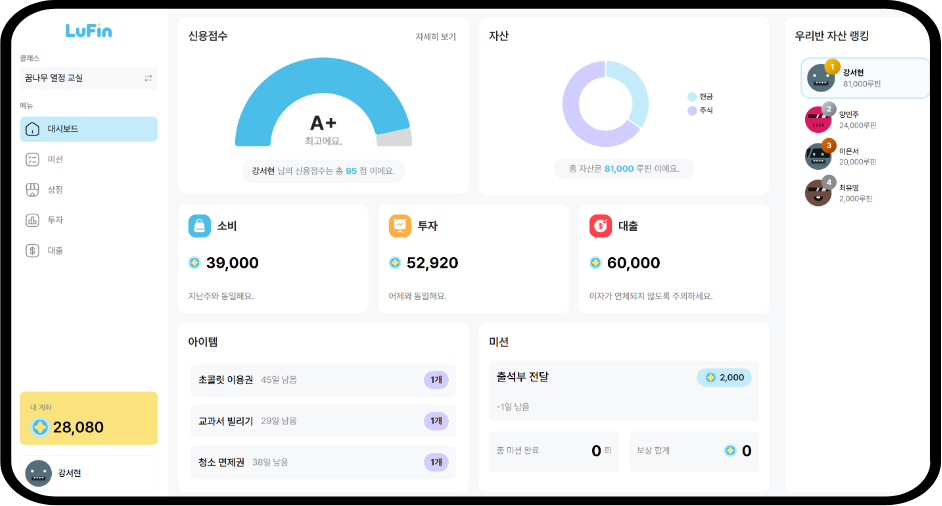
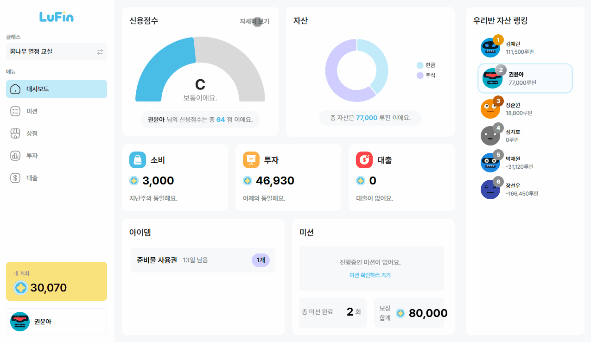
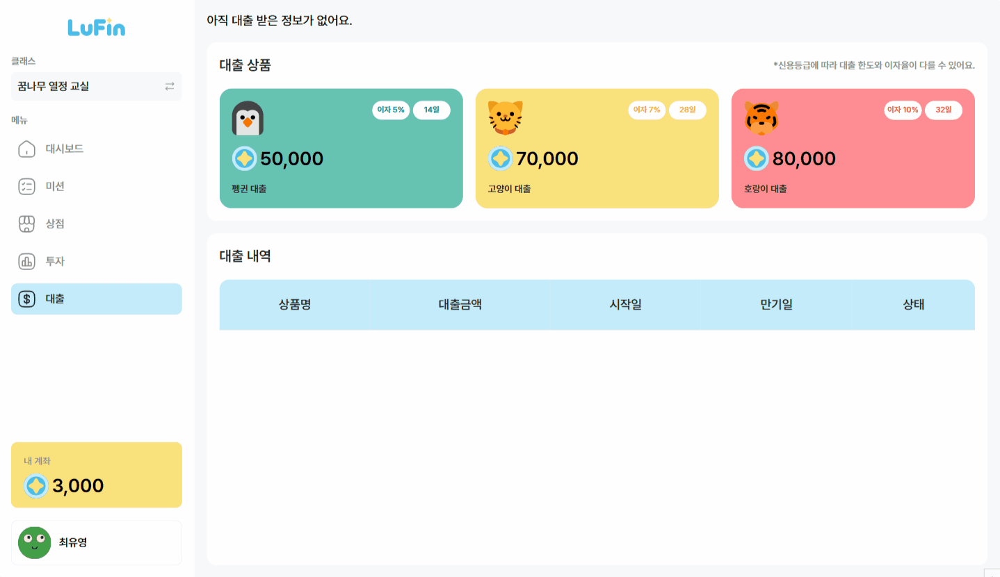
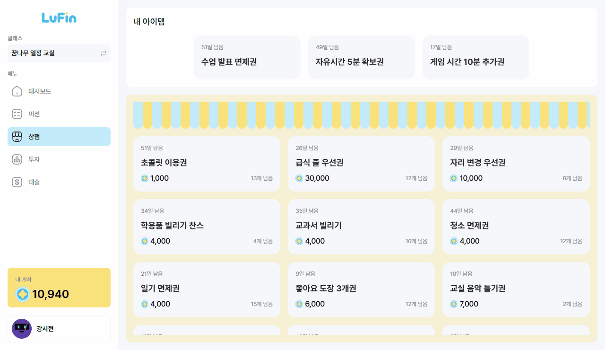
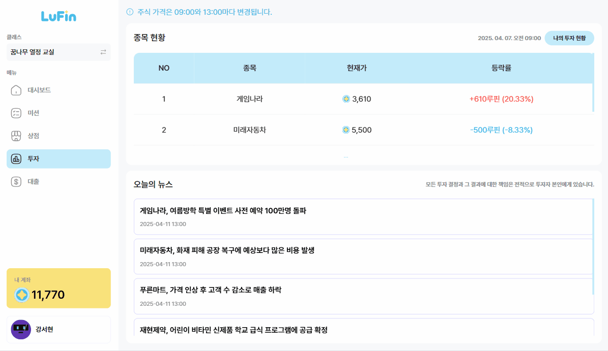
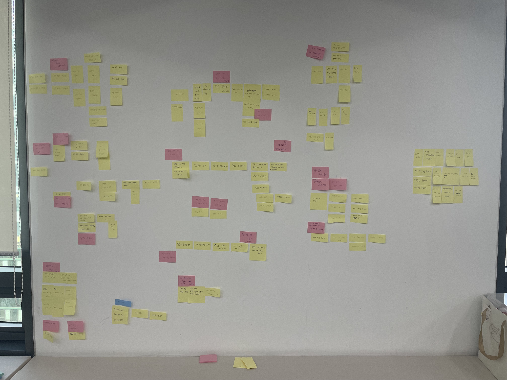
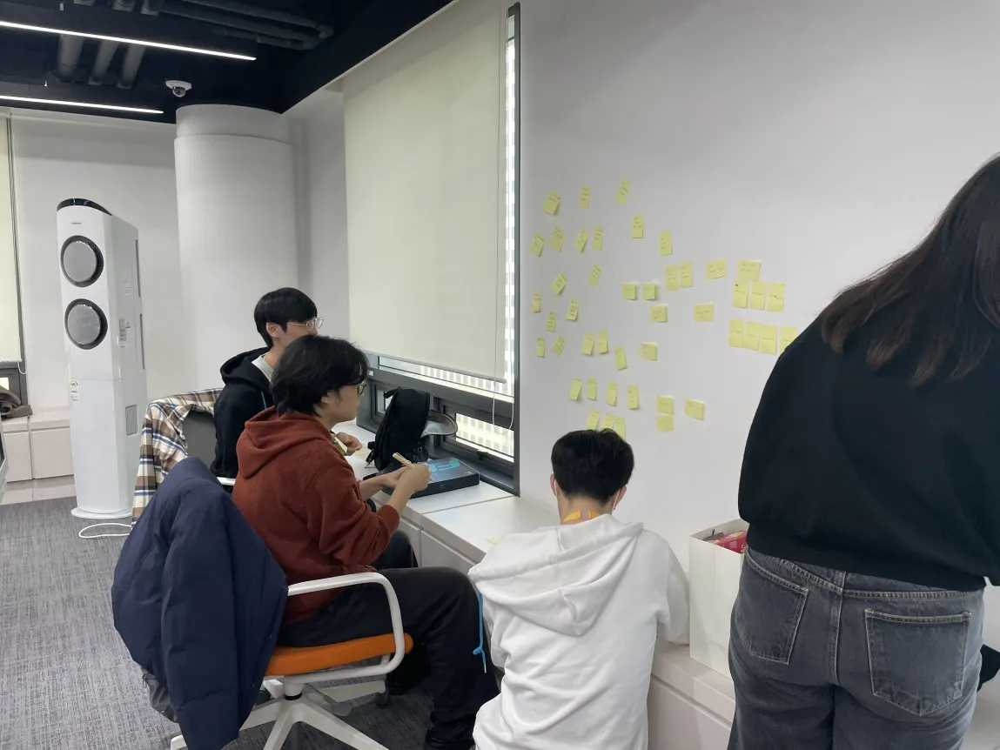
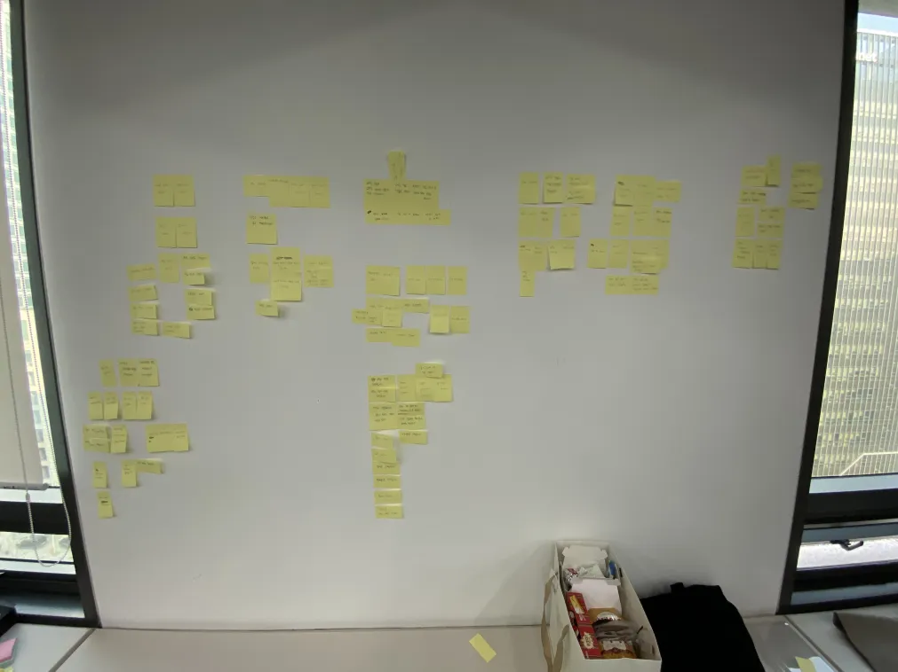

초등학교 교실 속에서 어려운 금융 지식을 게임처럼 경험하며,
자산 관리 능력을 키우는 교육 플랫폼입니다.
가상의 화폐와 신용 등급을 활용해 대출, 주식, 소비를 경험하고
올바른 경제 관념을 형성하는데 도움을 줍니다.

체감하기 힘든 금융 교육과
추상적인 경제 개념
게임을 통한 실생활 기반
금융 시뮬레이션

신용 점수에 따라 이자율과 한도가 변동되는 현실적인 대출 로직 및 연체/회복 시스템 구현

구매부터 사용, 환불까지 이어지는 아이템 생명주기 로직 구축

주식 관련 뉴스를 확인하고 가격 변동을 예측하여 투자하는 경험을 설계
선착순 아이템 구매 시 발생할 수 있는 Race Condition을 해결하기 위해 `SELECT ... FOR UPDATE` 쿼리를 발생하는 비관적 락을 적용하여 트랜잭션 충돌 없이 재고 데이터의 정합성을 보장했습니다.
커스텀 어노테이션(@TeacherOnly)과 Aspect를 활용하여 컨트롤러마다 반복되는 권한 검증 로직을 깔끔하게 분리하고 모듈화했습니다.
코드 푸시부터 빌드, 테스트, Docker 배포까지 이어지는 무중단 자동화 파이프라인을 구축하여 개발 생산성을 극대화했습니다.
요구사항 명세서, API 문서(Swagger/RestDocs), 에러 코드 정의 등 개발 전 과정의 산출물을 표준화하여 기획-개발 간 커뮤니케이션 비용을 최소화했습니다.
@Lock(LockModeType.PESSIMISTIC_WRITE)
@QueryHints({
@QueryHint(name = "jakarta.persistence.lock.timeout", value = "1000")
})
@Query("SELECT i FROM Item i WHERE i.id = :itemId")
Optional<Item> findByIdWithPessimisticLock(@Param("itemId") Integer itemId);선착순 아이템 구매와 같이 충돌 빈도가 높은 핵심 로직에 DB 수준의 Lock을 적용하여, 동일 자원에 대한 동시 접근을 원천적으로 차단하고 데이터 정합성을 보장했습니다.
무한 대기(Deadlock)를 방지하기 위해 1초(`1000ms`)의 타임아웃을 설정하여 시스템의 가용성과 안정성을 동시에 확보했습니다.
비즈니스 로직에만 몰입할 수 있는 자동화 환경을 구축하여 개발 생산성을 극대화했습니다.
@Aspect @Component
public class RoleCheckAspect {
@Before("@annotation(TeacherOnly)")
public void checkTeacherRole() {
Member member = getCurrentUser();
if (member.getMemberRole() != MemberRole.TEACHER) {
throw new BusinessException(ErrorCode.REQUEST_DENIED);
}
}
}초반부터 이벤트 스토밍을 통해 도메인 흐름을 명확히 정의하고, 복잡한 금융 로직을 도메인별로 분리하여 설계의 기반을 다졌습니다.



요구사항 명세서, API 문서, 에러 코드 정의, ERD 등 개발 전 과정의 산출물을 표준화하여 커뮤니케이션 비용을 최소화하고, 기획과 개발 간의 간극을 줄였습니다.